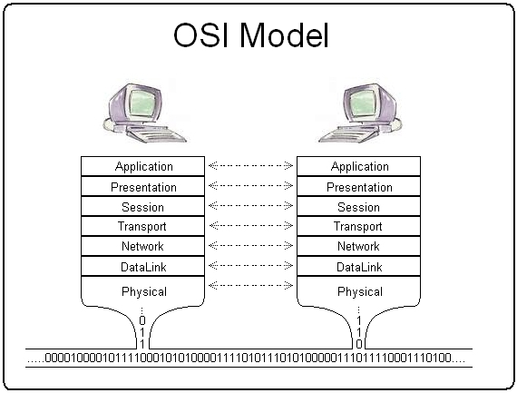

CSET 2200 - Lecture 6
Layer 3 - IPv4
Moving up the stack
OSI Model
Moving up the stack
 IP Model
IP Model
Why do we need Layer 3
- Aggregation
- Decouple hardware from address
IPv4
- One of many Layer 3 protocols
- Main focus of this class
- Base layer of TCP/IP
- PDU called Packet
IPv4 (contd)
- Connectionless
- Best effort delivery
- Unreliable
- Layer 4 deals wth some of this
Packet consists of Header and Data
- Headers get much more complicated
- Contain address and other data
IPv4 Addresses
- 32 bit
- Normally written as "dotted quad" - a.b.c.d
- Allocated by IANA (Internet Assigned Numbers Authority)
IPv4 Addresses (contd)
- Address divided into hosts and network
- Multiple "networks" each containing given "hosts"
- Each network present on a logical layer 2 network
IPv4 Addresses (contd)
- Network size varies
- Originally varied based on multiple classes
Network Classes
- Originally 5 classses
- labelled A-E
- Only A-C used in practice, with D being Multicast
Quick binary refresher
- Binary 0 and 1
- Multiple bits into bytes
- We'll write least significant on right
Binary bits
- 128 64 32 16 8 4 2 1
- 1 1 0 0 0 0 0 1
- 128 + 64 + 1
- 193
Class A Network
- Addresses start with 0xxxxxxx
- 0.0.0.0 - 127.255.255.255
- 128 networks
- 2^24 hosts (16777216) per network
Class B Network
- Addresses start with 10xxxxxx
- 128.0.0.0 - 191.255.255.255
- 16384 networks
- 2^16 hosts (65536) per network
Class C Network
- Addresses start with 110xxxxx
- 192.0.0.0 - 223.255.255.255
- 2^21 networks (2097152)
- 256 hosts per network
Class D Network
- Addresses start with 1110xxxx
- 224.0.0.0 - 239.255.255.255
- Multicast
Class E Network
- Addresses start with 1111xxx
- 240.0.0.0 - 255.255.255.255
- Experimental
Reserved Addresses
- 0.0.0.0/8 - Current Network
- 10.0.0.0/8 - Private Network (RFC1918)
- 127.0.0.0/8 - Loopback
- 169.254.0.0/16 - Link-Local
- 172.16.0.0/12 - Private Network (RFC1918)
- 192.168.0.0/16 - Private Network (RFC1918)
Other address info
- First usable typically network
- Last is broadcast
- We'll get to the current way addresses assigned soon
Next class
- More IP subnetting
- Basic Routing
- https://en.wikipedia.org/wiki/Classless_Inter-Domain_Routing
- Book chapter 21